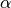
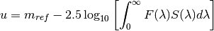
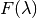
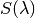
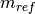
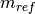
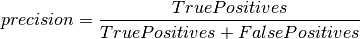
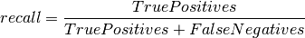
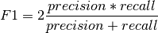

2.3.4. Classification: Learning Labels of Astronomical Sources¶
Modern astronomy is concerned with the study and characterization of distant objects such as stars, galazies, or quasars. Objects can often be very quickly characterized through measurements of their optical spectrum. A spectrum is a measure of the photon flux as a function of wavelength.

The spectrum of the star Vega (-Lyr) with the five filters from the Sloan Digital Sky Survey (SDSS), which are denoted by the letters u (ultraviolet), g (green), r (red), i (infrared), and z (infrared).
The above spectrum is that of the star Vega, the brightest star in the northern constellation Lyra. Its surface is at about 9600 degrees Kelvin, and its spectrum is roughly that of a 9600K black-body, with absorption due to molecules in its cooler atmosphere. The deepest of these absorption spikes are due to the energy levels of Hydrogen. From examination of high-resolution spectra like this one, one can learn a lot about the physical processes at work in a distant astronomical source.
Unfortunately, spectra like these are very time-consuming and expensive to obtain, especially for very faint objects. For this reason, astronomers have long observed objects through broad-band filters, recording the observations using the magnitude system. For the u-band filter shown above, the magnitude is defined as

Here  is the filter transmission, and  is
the flux at wavelength  . The constant 
encodes the calibration of the telescope. The reason for the logarithmic
form of the magnitude is historical.
. The constant 
encodes the calibration of the telescope. The reason for the logarithmic
form of the magnitude is historical.
Astronomers generally work in terms of the color, defined as the difference of magnitudes between two different filter bands. This is because the constant can be difficult to calibrate from telescope to telescope or from night to night. Subtracting two magnitudes reduces this uncertainty. For example, an observation of the star Vega above will consist of a vector four numbers: [u-g, g-r, r-i, i-z].
Because of this, machine-learning tasks in Astronomy are often based on a small spectroscopic training set, with a larger set of photometric observations with unknown labels or classification. We’ll examine a few of those situations here.
2.3.4.1. Motivation: Why is this Important?¶
The study of quasars, an amalgamation of the words “quasi-stellar radio source”, has led to many advances in our understanding of fundamental physics. Quasars, also commonly referred to as QSOs (Quasi-Stellar Objects) or AGNs (Active Galactic Nuclei) are galaxies which contain supermassive black holes at their core. These black holes can weigh-in at over 10 billion times the mass of our sun! Astronomical surveys using filters like those above can find thousands of these, but their appearance on the sky is very similar to that of a normal star in our galaxy. Thus the task of choosing quasars for time-consuming spectral followup is very difficult, and well-suited for approaching with machine learning.
2.3.4.2. Star-Quasar Classification: Naive Bayes¶
In the folder $TUTORIAL_HOME/data/sdss_colors, there is a script fetch_data.py which will download the colors of over 700,000 stars and quasars from the Sloan Digital Sky Survey. 500,000 of them are training data, spectroscopically identified as stars or quasars. The remaining 200,000 have been classified using a machine learning scheme.
Here we will use a Naive Bayes estimator to classify the objects. First, we will construct our training data and test data arrays:
>>> import numpy as np
>>> train_data = np.load('data/sdss_colors/sdssdr6_colors_class_train.npy')
>>> test_data = np.load('data/sdss_colors/sdssdr6_colors_class.200000.npy')
Now we must put these into arrays of shape (n_samples, n_features) in order to pass them to routines in scikit-learn. Training samples with zero-redshift are stars, while samples with positive redshift are quasars:
>>> X_train = np.vstack([train_data['u-g'],
... train_data['g-r'],
... train_data['r-i'],
... train_data['i-z']]).T
>>> y_train = (train_data['redshift'] > 0).astype(int)
>>> X_test = np.vstack([test_data['u-g'],
... test_data['g-r'],
... test_data['r-i'],
... test_data['i-z']]).T
>>> y_test = (test_data['label'] == 0).astype(int)
Notice that we’ve set this up so that quasars have y = 1, and stars have y = 0. Now we’ll set up a Naive Bayes classifier. This will fit a four-dimensional uncorrelated gaussian to each distribution, and from these gaussians quickly predict the label for a test point:
>>> from sklearn import naive_bayes
>>> gnb = naive_bayes.GaussianNB()
>>> gnb.fit(X_train, y_train)
>>> y_pred = gnb.predict(X_test)
Let’s check our accuracy. This is the fraction of labels that are correct:
>>> accuracy = float(np.sum(y_test == y_pred)) / len(y_test)
>>> print accuracy
0.617245
We have 61% accuracy. Not very good. But we must be careful here: the accuracy does not always tell the whole story. In our data, there are many more stars than quasars
>>> print np.sum(y_test == 0)
186721
>>> print np.sum(y_test == 1)
13279
Stars outnumber Quasars by a factor of 14 to 1. In cases like this, it is much more useful to evaluate the fit based on precision and recall. Because there are many fewer quasars than stars, we’ll call a quasar a positive label and a star a negative label. The precision asks what fraction of positively labeled points are correctly labeled:

The recall asks what fraction of positive samples are correctly identified:

We can calculate this for our results as follows:
>>> TP = np.sum((y_pred == 1) & (y_test == 1))
>>> FP = np.sum((y_pred == 1) & (y_test == 0))
>>> FN = np.sum((y_pred == 0) & (y_test == 1))
>>> print TP / float(TP + FP) # precision
0.142337086782
>>> print TP / float(TP + FN) # recall
0.948113562768
For convenience, these can be computed using the tools in the metrics sub-package of scikit-learn:
>>> from sklearn import metrics
>>> metrics.precision_score(y_test, y_pred)
0.14233708678153123
>>> metrics.recall_score(y_test, y_pred)
0.94811356276828074
Another useful metric is the F1 score, which gives a single score based on the precision and recall for the class:

The closer the F1-score is to 1.0, the better the classification is.
>>> metrics.f1_score(y_test, y_pred)
0.24751550658108151
For convenience, sklearn.metrics provides a function that computes all of these scores, and returns a nicely formatted string. For example:
>>> print metrics.classification_report(y_test, y_pred, target_names=['Stars', 'QSOs'])
precision recall f1-score support
Stars 0.99 0.59 0.74 186721
QSOs 0.14 0.95 0.25 13279
avg / total 0.94 0.62 0.71 200000
We see that for Gaussian Naive Bayes, our QSO recall is fairly good: we are correctly identifying 95% of all quasars. The precision, on the other hand, is much worse. Of the points we label quasars, only 14% of them are correctly labeled. This low recall leads to an F1-score of only 0.25. This is not an optimal classification of our data. Apparently Naive Bayes is a bit too naive for this problem.
Later, in Exercise #1, we will apply a more sophisticated learning method to this task, which will potentially improve on these results.
Next Section: Regression